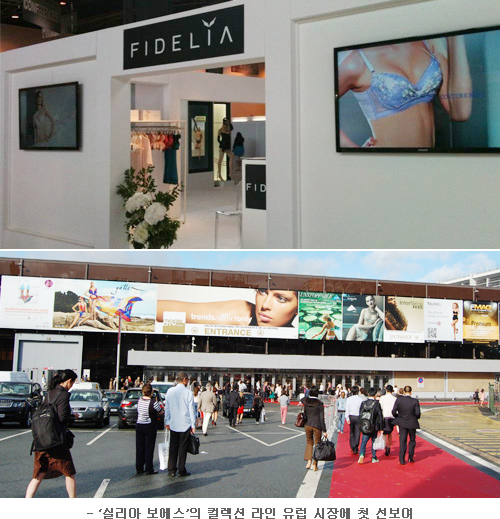

main < FIDELIA PR < press
press 상세 테이블
| 피델리아, ‘파리 모드 시티 2012’ 참가2012.07.12 OSEN |

[OSEN=황인선 기자] 속옷 브랜드 '피델리아'가 지난 7일부터 9일까지 프랑스 파리에서 열린 국제 란제리 & 수영복 박람회 ‘파리 모드 시티 2012(Mode City PARIS 2012)'에 참여했다.
이번 ‘파리 모드 시티 2012’에는 란제리, 수영복 브랜드 550여 업체를 비롯해 소재업체 포함 총 770개 업체가 참가했으며, 그 중 한국 브랜드로는 피델리아가 유일했다.
피델리아는 이번 행사에 단독으로 홍보부스를 마련하고 3일간 매일 다양한 테마로 열린 메인 패션쇼에 총 10개의 작품을 출품했다. 이번 출품작부터 전 크리스챤 디올 수석디자이너 '실리아 보에스'가 크리에티브 디렉터로 활약했다. 그는 오뜨꾸띄르적인 감각에서 전수된 수공예적인 기법을 바탕으로 피델리아만의 여성미를 한층 승화시킨 컬렉션 작품을 선보였다.
행사 주최측 유로벳 대표(Cecile Vivier Guerin)는 “피델리아 컬렉션을 보면서 한국 브랜드가 가진 창의적인 아이디어와 열정에 놀랐다”며 “아시아의 새로운 에너지를 느낄 수 있었다”고 전했다.
유럽 란제리 ‘컨셉트파리’의 디자인 디렉터 제니퍼 켈(Jennifer Kell)은 “프렌치한 디테일이 느껴졌고 소재와 퀄리티를 포함한 전체적인 부분에서 피델리아만의 확실한 색을 가진 글로벌 브랜드로서의 힘을 느꼈다”고 극찬했다.
피델리아는 이번 국제 란제리 쇼에서 실리아 보에스 디렉팅 하에 첫 선을 보이는 컬렉션 라인 30여점을 비롯해 프리미엄 라인 ‘베라왕 포 피델리아’ 포함해 총 60여 점을 전시했다.
|
|
|